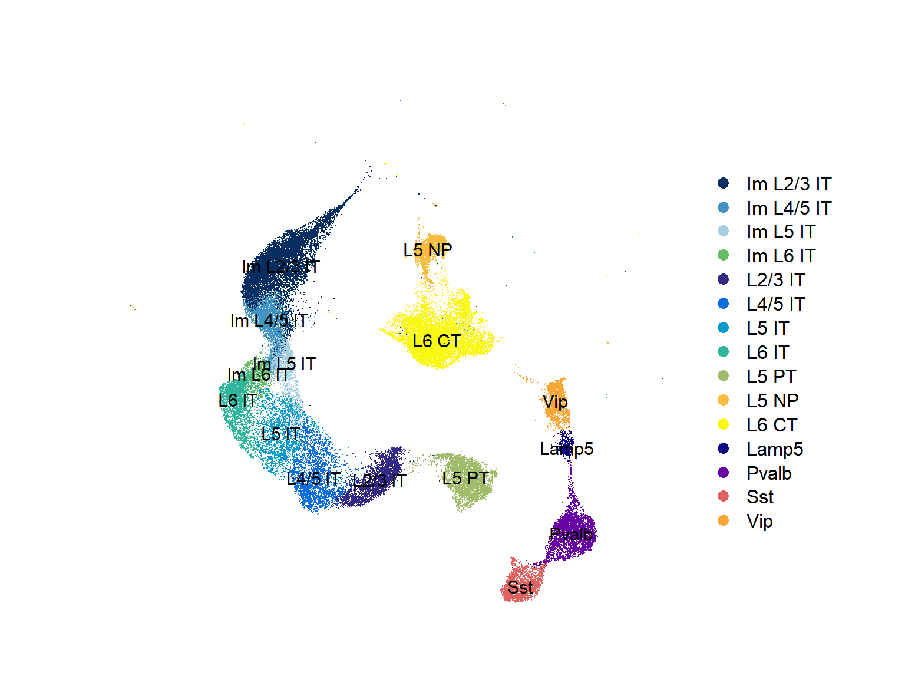
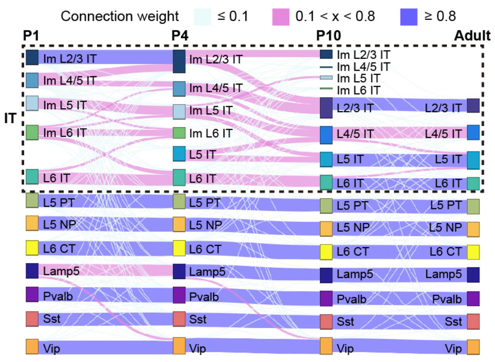
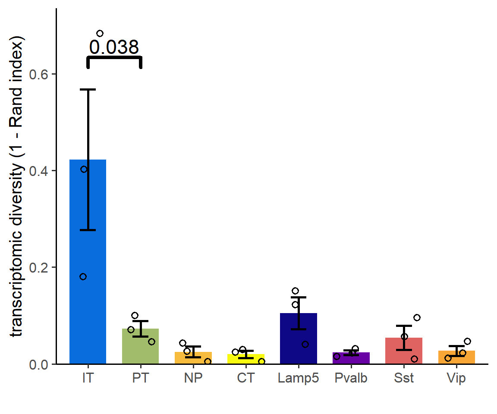
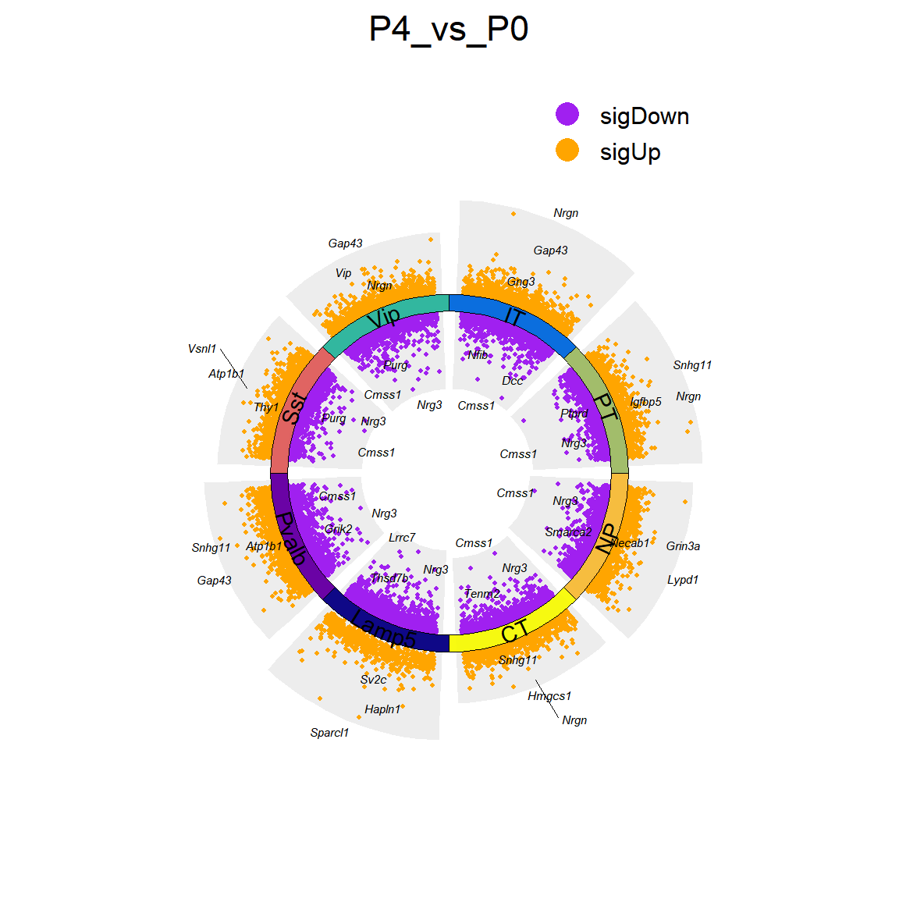
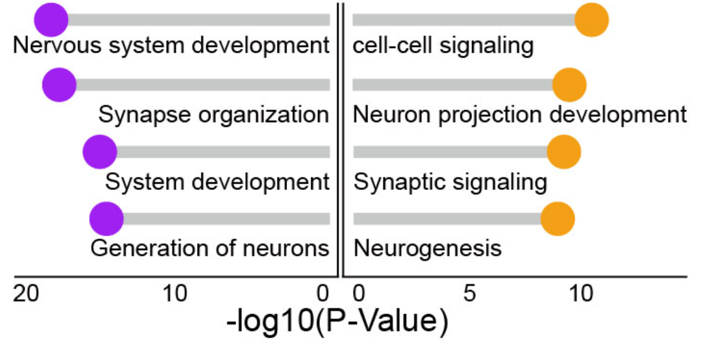
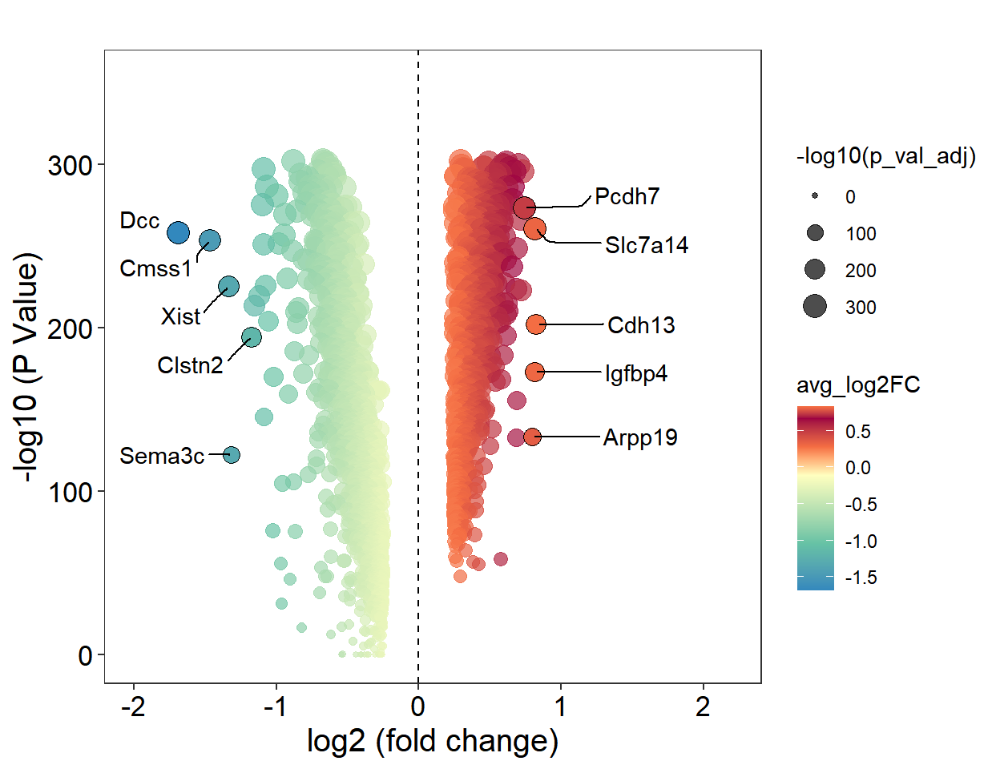
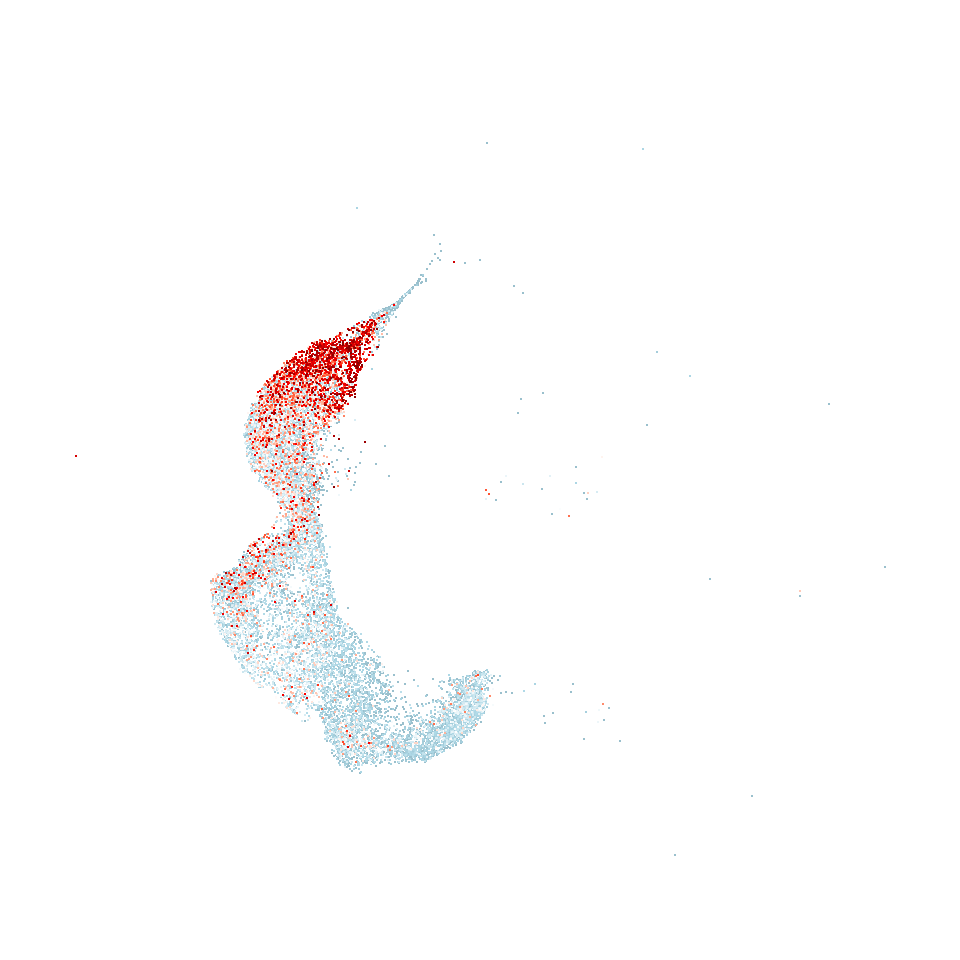

Code
library(Seurat)
library(tidyverse)
library(ggsignif)
library(scRNAtoolVis)
library(ggrepel)
source('bin/Palettes.R')library(Seurat)
library(tidyverse)
library(ggsignif)
library(scRNAtoolVis)
library(ggrepel)
source('bin/Palettes.R')seu.harmony <- readRDS('../data/seu.harmony.rds')
seu.harmony.metadata <- readRDS('../data/seu.harmony.metadata.rds')
seu.harmony@meta.data <- seu.harmony.metadata
seu.neuron <- seu.harmony[,seu.harmony$SubType %in% names(col_SubType)[1:15]]seu <- seu.neuron
seu$SubType <- factor(seu$SubType, levels = names(col_SubType)[1:15])
Figure_2A <-
DimPlot(seu,
reduction = 'umap', group.by = "SubType", label = T,
cols = col_SubType) +
theme(axis.line = element_blank(), axis.ticks = element_blank(),
axis.text = element_blank(), plot.title = element_text(size = 30)) +
labs(x='', y='', title = "") +
coord_fixed()
Figure_2A
ggsave("../../Figure/Figure2/Figure_2A.pdf", plot = Figure_2A,
height = 6, width = 8, units = "in")seu <- seu.neuron
# 去掉<50cell 的 cluster
seu.P0 <- subset(seu, cells=colnames(seu)[which(
seu$orig.ident == "P0" & seu$SubType_v4 %in% c("Im L2/3 IT","Im L4/5 IT","Im L5 IT","Im L6 IT","L6 IT","L5 PT","L5 NP","L6 CT","Lamp5","Pvalb","Sst","Vip")
)])
seu.P4 <- subset(seu, cells=colnames(seu)[which(
seu$orig.ident == "P4" & seu$SubType_v4 %in% c("Im L2/3 IT","Im L4/5 IT","Im L5 IT","Im L6 IT","L5 IT","L6 IT","L5 PT","L5 NP","L6 CT","Lamp5","Pvalb","Sst","Vip")
)])
seu.P10 <- subset(seu, cells=colnames(seu)[which(
seu$orig.ident == "P10" & seu$SubType_v4 %in% c("Im L2/3 IT","Im L4/5 IT","Im L5 IT","Im L6 IT","L2/3 IT","L4/5 IT","L5 IT","L6 IT","L5 PT","L5 NP","L6 CT","Lamp5","Pvalb","Sst","Vip")
)])
seu.Adult <- subset(seu, cells=colnames(seu)[which(
seu$orig.ident == "Adult" & seu$SubType_v4 %in% c("L2/3 IT","L4/5 IT","L5 IT","L6 IT","L5 PT","L5 NP","L6 CT","Lamp5","Pvalb","Sst","Vip")
)])
SubType <- c("Im L2/3 IT"=0,"Im L4/5 IT"=1,"Im L5 IT"=2,"Im L6 IT"=3,"L2/3 IT"=4,"L4/5 IT"=5,"L5 IT"=6,"L6 IT"=7,"L5 PT"=8,"L5 NP"=9,"L6 CT"=10,"Lamp5"=11,"Pvalb"=12,"Sst"=13,"Vip"=14)
HVGs <- FindVariableFeatures(seu.neuron, selection.method = "vst", nfeatures = 2000)
HVGs <- VariableFeatures(seu.neuron)
DMatrix_P0 <- xgb.DMatrix(
data = t(seu.P0@assays$RNA@data[HVGs,]),
label = as.numeric(match(seu.P0$SubType_v4, names(SubType)) - 1))
DMatrix_P4 <- xgb.DMatrix(
data = t(seu.P4@assays$RNA@data[HVGs,]),
label = as.numeric(match(seu.P4$SubType_v4, names(SubType)) - 1))
DMatrix_P10 <- xgb.DMatrix(
data = t(seu.P10@assays$RNA@data[HVGs,]),
label = as.numeric(match(seu.P10$SubType_v4, names(SubType)) - 1))
DMatrix_Adult <- xgb.DMatrix(
data = t(seu.Adult@assays$RNA@data[HVGs,]),
label = as.numeric(match(seu.Adult$SubType_v4, names(SubType)) - 1))
# P0 → P4
cv <- xgb.cv(data = DMatrix_P0, nrounds = 1000, nfold = 5, max_depth = 5, eta = 0.5,
early_stopping_rounds = 5, objective = "multi:softmax",
num_class=15, verbose = F)
model_xgb <- xgboost(data=DMatrix_P0, max_depth=5, eta=0.5, nthread = 5,
nround = cv$best_iteration, objective = "multi:softmax",
num_class=15, verbose = F)
pre_P0_P4 <- predict(model_xgb, newdata = DMatrix_P4)
df_P0_P4 <- as.data.frame.array(table(names(SubType[pre_P0_P4+1]), seu.P4$SubType_v4))
# P4 → P10
cv <- xgb.cv(data = DMatrix_P4, nrounds = 1000, nfold = 5, max_depth = 5, eta = 0.5,
early_stopping_rounds = 5, objective = "multi:softmax",
num_class=15, verbose = F)
model_xgb <- xgboost(data=DMatrix_P4, max_depth=5, eta=0.5, nthread = 5,
nround = cv$best_iteration, objective = "multi:softmax",
num_class=15, verbose = F)
pre_P4_P10 <- predict(model_xgb, newdata = DMatrix_P10)
df_P4_P10 <- as.data.frame.array(table(names(SubType[pre_P4_P10+1]),seu.P10$SubType_v4))
# P10 → Adult
cv <- xgb.cv(data = DMatrix_P10, nrounds = 1000, nfold = 5, max_depth = 5,
eta = 0.5, early_stopping_rounds = 5, objective = "multi:softmax",
num_class=15, verbose = F)
model_xgb <- xgboost(data=DMatrix_P10, max_depth=5, eta=0.5, nthread = 5,
nround = cv$best_iteration, objective = "multi:softmax",
num_class=15, verbose = F)
pre_P10_Adult <- predict(model_xgb, newdata = DMatrix_Adult)
df_P10_Adult <- as.data.frame.array(table(names(SubType[pre_P10_Adult+1]),seu.Adult$SubType_v4))
df1 <- df_P0_P4
df1 <- df1[rowSums(df1)>=50, colSums(df1)>=50]
df2 <- df_P4_P10
df2 <- df2[rowSums(df2)>=50, colSums(df2)>=50]
df3 <- df_P10_Adult
df3 <- df3[rowSums(df3)>=50, colSums(df3)>=50]
df1_mean <- df1/rowSums(df1)
df1_mean$P0 <- rownames(df1)
df1_mean_long <- pivot_longer(df1_mean, !P0, names_to = "P4", values_to = "Value")
df1$P0 <- rownames(df1)
df1_long <- pivot_longer(df1, !P0, names_to = "P4", values_to = "Value")
df1_long$P0 <- paste("P0", df1_long$P0)
df1_long$P4 <- paste("P4", df1_long$P4)
colnames(df1_long) <- c('source', 'target', 'value')
df1_long$Prob <- df1_mean_long$Value
df2_mean <- df2/rowSums(df2)
df2_mean$P4 <- rownames(df2)
df2_mean_long <- pivot_longer(df2_mean, !P4, names_to = "P10", values_to = "Value")
df2$P4 <- rownames(df2)
df2_long <- pivot_longer(df2, !P4, names_to = "P10", values_to = "Value")
df2_long$P4 <- paste("P4", df2_long$P4)
df2_long$P10 <- paste("P10", df2_long$P10)
colnames(df2_long) <- c('source', 'target', 'value')
df2_long$Prob <- df2_mean_long$Value
df3_mean <- df3/rowSums(df3)
df3_mean$P10 <- rownames(df3)
df3_mean_long <- pivot_longer(df3_mean, !P10, names_to = "Adult",
values_to = "Value")
df3$P10 <- rownames(df3)
df3_long <- pivot_longer(df3, !P10, names_to = "Adult", values_to = "Value")
df3_long$P10 <- paste("P10", df3_long$P10)
df3_long$Adult <- paste("Adult", df3_long$Adult)
colnames(df3_long) <- c('source', 'target', 'value')
df3_long$Prob <- df3_mean_long$Value
col <- c("Im_L2/3_IT"="#062e60", "Im_L4/5_IT"="#4393c3", "Im_L5_IT"="#a6cee3", "Im_L6_IT"="#66bd63",
"L2/3_IT"="#342a85", "L4/5_IT"="#0a6ddd", "L5_IT"="#009acd",
"L6_IT"="#31b69e", "L5_PT"="#a1bc6a", "L5_NP"="#f7bc3e",
"L6_CT"="#f7fa10", "Lamp5"="#0e0786", "Pvalb"="#6902a4", "Sst"="#df6361","Vip"="#f8a635")
links <- rbind(df1_long, df2_long, df3_long)
#links <- df3_long
links$value <- links$Prob
links$source <- gsub(" ","_",links$source)
links$target <- gsub(" ","_",links$target)
links <- links[which(links$value != 0),]
nodes <- paste(rep(c("P0","P4","P10","Adult"), each=length(col)),
rep(names(col), 4), sep="_")
nodes <- nodes[which(nodes %in% unique(c(links$source, links$target)))]
nodes <- data.frame(name=nodes)
nodes$index <- 0:(nrow(nodes) - 1)
links <- merge(links, nodes, by.x="source", by.y="name")
links <- merge(links, nodes, by.x="target", by.y="name")
names(links) <- c("target","source","Value","Prob","IDsource","IDtarget")
links$group <- "links_a"
links$group[which(links$Prob>0.1 & links$Prob<0.8)] <- "links_b"
links$group[which(links$Prob >= 0.8)] <- "links_c"
nodes$group <- nodes$name
domain <- c("links_a", "links_b", "links_c", nodes$name)
range <- c("#ebfafa", "#e489dc", "#6860ff",
as.character(c(col[-c(5:7)], col[-c(5:6)], col, col[-c(1:4)])))
colourScale <- paste('d3.scaleOrdinal() .domain(["', domain[1], sep = '')
for (i in 2:length(domain)){
colourScale <- paste(colourScale, '", "', domain[i], sep = '')
}
colourScale <- paste(colourScale, '"]) .range(["', sep = '')
colourScale <- paste(colourScale, range[1], sep = '')
for (i in 2:length(range)){
colourScale <- paste(colourScale,'", "', range[i], sep = '')
}
colourScale <- paste(colourScale,'"])', sep = '')
links <- merge(
links,
data.frame(
target=c("P10_Im_L6_IT","Adult_L2/3_IT","Adult_L4/5_IT","Adult_L5_IT","Adult_L6_IT"),
source=c("P4_Im_L6_IT","P10_Im_L2/3_IT","P10_Im_L4/5_IT","P10_Im_L5_IT","P10_Im_L6_IT"),
Value=c(0,0,0,0,0), Prob=c(0,0,0,0,0),
IDsource=c(15,25,26,27,28), IDtarget=c(28,40,41,42,43),
group=c("links_a","links_a","links_a","links_a","links_a")),
all=T)
Figure_2B <- sankeyNetwork(
Links = links, Nodes = nodes, Source = "IDsource", Target = "IDtarget",
Value = "Value", NodeID = "name", colourScale = colourScale, LinkGroup="group",
NodeGroup="group", iterations= 0, width = 600, height = 400, fontSize=0)
Figure_2Bknitr::include_graphics("./images/Figure_2B.png", dpi = 300)
saveNetwork(p,"../../Figure/Figure2/Figure_2B/Figure_2B.html")RI <- read.csv("../data/Figure2/RI.csv", header = T, row.names = 1)
RI$SubType <- rownames(RI)
df <- pivot_longer(RI, !SubType, names_to = "Time", values_to = "Value")
df$Value <- 1-df$Value
colors <- c("IT"="#0a6ddd","PT"="#a1bc6a", "NP"="#f7bc3e", "CT"="#f7fa10",
"Lamp5"="#0e0786", "Pvalb"="#6902a4", "Sst"="#df6361", "Vip"="#f8a635")
df$SubType <- factor(df$SubType, levels = names(colors))
ebtop<-function(x){
return(mean(x)+sd(x)/sqrt(length(x)))
}
ebbottom<-function(x){
return(mean(x)-sd(x)/sqrt(length(x)))
}
Figure_2C <-
ggplot(df, aes(x=SubType, y=Value)) +
stat_summary(geom="bar", fun=mean, fill = colors, width=0.7) +
stat_summary(geom="errorbar", linewidth=1.0,
fun.min=ebbottom, fun.max=ebtop,
width=0.3) +
geom_jitter(width=0.3, shape = 1, size = 2, stroke=1) +
geom_signif(comparisons=list(c("IT","PT")),
test=t.test, test.args=list(var.equal=T, alternative="greater"),
y_position=c(0.6),
size = 1.5, textsize = 6, parse=T) +
scale_y_continuous(breaks=seq(0,0.7,0.2), limits=c(0,0.7),
expand=expansion(mult=c(0, 0.05))) +
theme_classic(base_size = 15) +
labs(x="", y="transcriptomic diversity (1 - Rand index)")
Figure_2C
ggsave("../../Figure/Figure2/Figure_2C.pdf", plot = Figure_2C,
height = 5, width = 6, units = "in")seu <- seu.neuron
seu$SubType_merge <- seu$SubType
seu$SubType_merge[seu$SubType_merge %in% names(col_SubType)[1:8]] <- "IT"
seu$SubType_merge[seu$SubType_merge %in% c("L5 PT")] <- "PT"
seu$SubType_merge[seu$SubType_merge %in% c("L6 CT")] <- "CT"
seu$SubType_merge[seu$SubType_merge %in% c("L5 NP")] <- "NP"
Time <- c("P1", "P4", "P10", "Adult")
SubType <- c("IT", "PT", "NP", "CT", "Lamp5", "Pvalb", "Sst", "Vip")
DEGs_all <- data.frame()
for (i in 1:3){
for (j in 1:8){
ident.1 <- colnames(seu)[seu$orig.ident==Time[i+1] & seu$SubType_merge==SubType[j]]
ident.2 <- colnames(seu)[seu$orig.ident==Time[i] & seu$SubType_merge==SubType[j]]
DEGs_ij <- FindMarkers(seu, ident.1 = ident.1, ident.2 = ident.2,
logfc.threshold = 0.25)
DEGs_ij$ident.1 <- paste(Time[i+1], SubType[j], sep = "_")
DEGs_ij$ident.2 <- paste(Time[i], SubType[j], sep = "_")
DEGs_ij$SubType_merge <- SubType[j]
DEGs_ij$gene <- rownames(DEGs_ij)
DEGs_all <- rbind(DEGs_all, DEGs_ij)
}
}
#write.csv(DEGs_all, "../../data/rds/Figure3/DEGs_Time_Neuron.csv")DEGs_all <- read.csv("../data/Figure2/DEGs_Time_Neuron.csv")
DEGs_all <- DEGs_all[,-1]
colnames(DEGs_all)[6] <- "cluster"
P4_cluster <- c("P4_IT","P4_PT","P4_NP","P4_CT","P4_Lamp5","P4_Pvalb","P4_Sst","P4_Vip")
P10_cluster <- c("P10_IT","P10_PT","P10_NP","P10_CT","P10_Lamp5","P10_Pvalb","P10_Sst","P10_Vip")
Adult_cluster <- c("Adult_IT","Adult_PT","Adult_NP","Adult_CT","Adult_Lamp5","Adult_Pvalb","Adult_Sst","Adult_Vip")
P4_vs_P0_DEGs <- DEGs_all[DEGs_all$cluster %in% P4_cluster,]
P10_vs_P4_DEGs <- DEGs_all[DEGs_all$cluster %in% P10_cluster,]
Adult_vs_P10_DEGs <- DEGs_all[DEGs_all$cluster %in% Adult_cluster,]
tile.col <- c("IT"="#0a6ddd","PT"="#a1bc6a","NP"="#f7bc3e","CT"="#f7fa10",
"Lamp5"="#0e0786","Pvalb"="#6902a4","Sst"="#df6361","Vip"="#31b69e")
P4_vs_P0_DEGs$cluster <- gsub("P4_","",P4_vs_P0_DEGs$cluster)
P4_vs_P0_DEGs_filter <- P4_vs_P0_DEGs[-grep("Gm", P4_vs_P0_DEGs$gene),]
P4_vs_P0_DEGs_filter$cluster <- factor(P4_vs_P0_DEGs_filter$cluster,
levels = names(tile.col))
Figure_2D_1 <-
jjVolcano(diffData = P4_vs_P0_DEGs_filter,
aesCol = c('purple','orange'),
topGeneN = 3,
tile.col = tile.col,
size = 2, segment.size = 0.1,
fontface = 'italic',
polar = T,
seed = 20230727)+
ylim(-5,5) +
labs(title = 'P4_vs_P0') +
theme(plot.title = element_text(hjust = 0.5))
Figure_2D_1
ggsave("../../Figure/Figure2/Figure_2D_1.pdf", plot = Figure_2D_1,
height = 6, width = 6, units = "in")P4_vs_P0_up <- P4_vs_P0_DEGs[P4_vs_P0_DEGs$avg_log2FC>1,]
P4_vs_P0_up <- data.frame('gene'=unique(P4_vs_P0_up[,10]))
#write.csv(P4_vs_P0_up, "../../data/rds/Figure2/GO/P4_vs_P0_up.csv")
P4_vs_P0_down <- P4_vs_P0_DEGs[P4_vs_P0_DEGs$avg_log2FC < -1,]
P4_vs_P0_down <- data.frame('gene'=unique(P4_vs_P0_down[,10]))
#write.csv(P4_vs_P0_down, "../../data/rds/Figure2/GO/P4_vs_P0_down.csv")
P10_vs_P4_up <- P10_vs_P4_DEGs[P10_vs_P4_DEGs$avg_log2FC>1,]
P10_vs_P4_up <- data.frame('gene'=unique(P10_vs_P4_up[,10]))
#write.csv(P10_vs_P4_up, "../../data/rds/Figure2/GO/P10_vs_P4_ups.csv")
P10_vs_P4_down <- P10_vs_P4_DEGs[P10_vs_P4_DEGs$avg_log2FC < -1,]
P10_vs_P4_down <- data.frame('gene'=unique(P10_vs_P4_down[,10]))
#write.csv(P10_vs_P4_down, "../../data/rds/Figure2/GO/P10_vs_P4_down.csv")
Adult_vs_P10_up <- Adult_vs_P10_DEGs[Adult_vs_P10_DEGs$avg_log2FC>1,]
Adult_vs_P10_up <- data.frame('gene'=unique(Adult_vs_P10_up[,10]))
#write.csv(Adult_vs_P10_up, "../../data/rds/Figure2/GO/Adult_vs_P10_up.csv")
Adult_vs_P10_down <- Adult_vs_P10_DEGs[Adult_vs_P10_DEGs$avg_log2FC < -1,]
Adult_vs_P10_down <- data.frame('gene'=unique(Adult_vs_P10_down[,10]))
#write.csv(Adult_vs_P10_down, "../../data/rds/Figure2/GO/Adult_vs_P10_down.csv")knitr::include_graphics("./images/Figure_2E.png", dpi = 300)
seu <- seu.neuron
Idents(seu) <- "SubType"
L23_DEGs <- FindMarkers(seu, ident.1 = "L2/3 IT", ident.2 = "Im L2/3 IT")
L45_DEGs <- FindMarkers(seu, ident.1 = "L4/5 IT", ident.2 = "Im L4/5 IT")
L5_DEGs <- FindMarkers(seu, ident.1 = "L5 IT", ident.2 = "Im L5 IT")
L6_DEGs <- FindMarkers(seu, ident.1 = "L6 IT", ident.2 = "Im L6 IT")
#saveRDS(L23_DEGs, "../../data/rds/Figure2/L23_DEGs.rds")
#saveRDS(L45_DEGs, "../../data/rds/Figure2/L45_DEGs.rds")
#saveRDS(L5_DEGs, "../../data/rds/Figure2/L5_DEGs.rds")
#saveRDS(L6_DEGs, "../../data/rds/Figure2/L6_DEGs.rds")L23_DEGs <- readRDS("../data/Figure2/IT_DEGs/L23_DEGs.rds")
DEGs <- L23_DEGs
DEGs <- DEGs %>% filter(p_val_adj != 0)
top <- DEGs[order(DEGs$avg_log2FC, decreasing = T),][1:5,]
top$label <- rownames(top)
down <- DEGs[order(DEGs$avg_log2FC),][1:5,]
down$label <- rownames(down)
logFC_threshold = 1.5
pval_threshold = 0.05
Figure_2F <-
ggplot(DEGs, aes(x = avg_log2FC, y = -log10(p_val_adj))) +
geom_point(aes(color = avg_log2FC, size = -log10(p_val_adj)), alpha = 0.7) +
geom_point(data = bind_rows(top, down),
aes(fill = avg_log2FC, size = -log10(p_val_adj)),
shape = 21, color = "black", show.legend = FALSE) +
geom_text_repel(data = top, aes(label = label), box.padding = 0.5,
nudge_x = 0.5, nudge_y = 0.2, segment.curvature = -0.1,
segment.ncp = 3, direction = "y", hjust = "left") +
geom_text_repel(data = down, aes(label = label), box.padding = 0.5,
nudge_x = -0.2, nudge_y = 0.2, segment.curvature = -0.1,
segment.ncp = 3, segment.angle = 20, direction = "y",
hjust = "right") +
scale_color_gradientn(
colours = c("#3288bd", "#66c2a5", "#ffffbf", "#f46d43", "#9e0142"),
values = scales::rescale(c(min(DEGs$avg_log2FC), -1, 0, 1, max(DEGs$avg_log2FC)))) +
scale_fill_gradientn(
colours = c("#3288bd", "#66c2a5", "#ffffbf", "#f46d43", "#9e0142"),
values = scales::rescale(c(min(DEGs$avg_log2FC), -1, 0, 1, max(DEGs$avg_log2FC)))) +
scale_size(range = c(1, 5)) +
geom_vline(xintercept = 0, linetype = "dashed") +
xlim(-2,2.2) +
ylim(c(0, max(-log10(DEGs$p_val_adj)) + 50)) +
labs(x = "log2 (fold change)", y = "-log10 (P Value)", title = "") +
theme_bw() +
theme(
panel.grid = element_blank(),
axis.text = element_text(size = 13, color = "black"),
axis.title = element_text(size = 15),
plot.title = element_text(hjust = 0.5),
plot.subtitle = element_text(hjust = 0.5)
)
Figure_2F
ggsave("../../Figure/Figure2/Figure_2F/L23_DEGs.pdf", plot = Figure_2F,
height = 5, width = 6.5, units = "in")Figure_2G <-
FeaturePlot(subset(seu.neuron, cells = colnames(seu.neuron)[which(
seu.neuron$SubType %in% names(col_SubType)[1:8])]), features = "Clstn2",
order = T, pt.size = 0.1) +
scale_color_gradientn(colours = c("lightblue3", "lightblue", "white", "red", "red4"), limits=c(0,3), na.value = "red4") +
coord_fixed() +
theme_void() +
theme(legend.position = "none") +
labs(title = "")
Figure_2G
ggsave("../../Figure/Figure2/Figure_2G/Clstn2_UMAP.png", plot = Figure_2G,
height = 5, width = 5, units = "in")